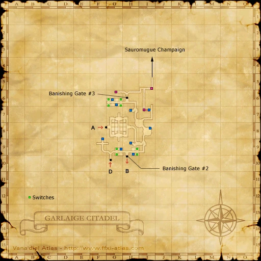
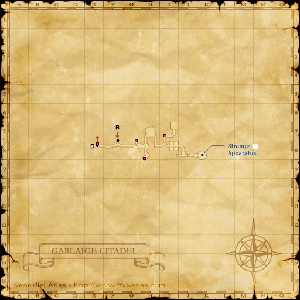
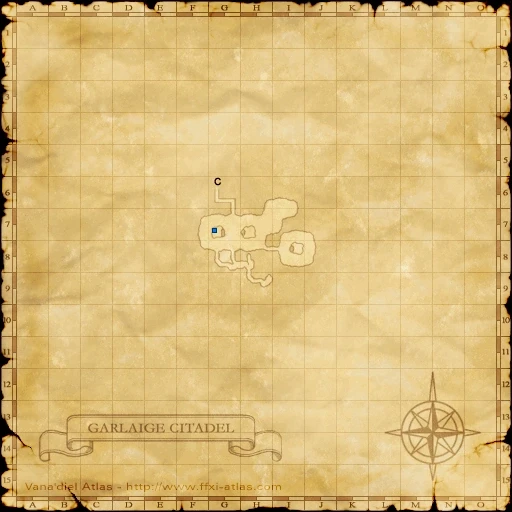

Description
Garlaige Citadel is a dungeon in Aragoneu.
Map

Involved in Quests / Missions
| Quest / Mission | Type | Starter | Location |
|---|---|---|---|
| Altana's Sorrow | General | Virnage | Bastok Mines (pos=I-5) |
| Borghertz's Chasing Hands | RNG AF | Guslam | Upper Jeuno (pos=H-8) |
| Borghertz's Healing Hands | WHM AF | Guslam | Upper Jeuno (pos=H-8) |
| Borghertz's Sorcerous Hands | BLM AF | Guslam | Upper Jeuno (pos=H-8) |
| Borghertz's Stalwart Hands | PLD AF | Guslam | Upper Jeuno (pos=H-8) |
| Borghertz's Striking Hands | MNK AF | Guslam | Upper Jeuno (pos=H-8) |
| Borghertz's Vermillion Hands | RDM AF | Guslam | Upper Jeuno (pos=H-8) |
| Borghertz's Wild Hands | BST AF | Guslam | Upper Jeuno (pos=H-8) |
| Escort for Hire (Windurst) | General | Dehn Harzhapan | Port Windurst (pos=G-6) |
| Hitting the Marquisate | THF AF 3 | Nanaa Mihgo | Windurst Woods (pos=J-3) |
| In Defiant Challenge | Genkai | Maat | Ru'Lude Gardens (pos=H-5) |
| Making Amens! | General | Kuroido-Moido | Port Windurst (pos=E-7) |
| Now Recording... | General | Darcia | Lower Jeuno (pos=H-7) |
| Peace for the Spirit | RDM AF 3 | Curilla | Chateau d'Oraguille (pos=I-9) |
| Rubbish Day | General | Chululu | Lower Jeuno (pos=I-8) |
| Strange Apparatus | General | --- | --- |
NPCs
| Name | Location | Type |
|---|---|---|
| Mashira | pos=I-7 | Quest NPC |
| Wanzo-Unzozo | pos=G-6 | Quest NPC |
Notorious Monsters
| Name | Level | Drops | Steal | Family | Spawns | Notes |
|---|---|---|---|---|---|---|
| Old Two-Wings | 52 | Bat Cape Fiend Blood | — |  Giant BatsImage source Giant BatsImage source | — | A, H |
| Serket | 70 | Hi-Reraiser Reraiser Scorpion Claw Scorpion Shell Serket Ring Serket Shield Triple Dagger Venomous Claw Vile Elixir Vile Elixir +1 | — |  ScorpionsImage source ScorpionsImage source | — | Respawn: 21-24 hr; H |
| Skewer Sam | 54 | Cockatrice Skin Wind Spear | — |  CockatriceImage source CockatriceImage source | — | Respawn: 21-24 hr; A, S |
Regular Monsters


Event Monsters
| Name | Level | Drops | Steal | Family | Spawns | Notes |
|---|---|---|---|---|---|---|
| Chandelier | 63 | Chandelier Coal | — |  BombsImage source BombsImage source | 1 | Spawned: Hitting the Marquisate; A, S, M |
| Guardian Statue | 61 | Nail Puller | — |  DollsImage source DollsImage source | 1 | Spawned: Peace for the Spirit; A |
Maps



EXP camps
Arrival and hazards
Entrance-side book. Stay on the first map for bats and beetles; avoid falling through floor holes.
Solo access: Banishing Gates
Obtain Pouch of Weighted Stones from ??? at Map 1 (G-8) to open the three gates yourself. Full directions, requirements and map · Gate locations.
Zenith availability: This target is hidden in the reviewed Zenith setup. Weighted Stones v1.0 corrects its availability; installation and an in-game check are pending. No level or prior quest unlocks it.
See Also
Story walkthroughs in this area
| Story | Mission / quest |
|---|---|
| ACP 3 | Gatherer of Light (I) |
References
External references describe their own server or retail rules. Documented Zenith changes take precedence.
Map credits: Map 1 — HorizonXI Wiki · Map 2 — HorizonXI Wiki · Map 3 — HorizonXI Wiki · Map 4 — HorizonXI Wiki. Original game maps © SQUARE ENIX; redrawn maps retain the credited authorship and license.


Additional level-75 reference
|
During the Great War, the armies of Altana, led by the first order of the Royal Knights of San d'Oria, reconstructed this underground fortress in hopes of taking the beastmen armies in Sauromugue by surprise. Outfitted with hundreds of troops from all three nations, the forces of Altana were successful in their attacks on the beastmen--until an enemy unit discovered a secret entrance to the citadel. This miscalculation resulted in the slaughter of all within the fortress, dealing a severe blow to the allied forces. Connecting AreasInvolved in Quests/Missions
| ||||||||||||||||||||||||||||||||||||||||||||||||||||||||||||||||||||||||||


Notorious Monsters Found Here
|
Name |
Level |
Drops |
Steal |
Family |
Spawns |
Notes | |||||||
|
63 |
1 |
A, S, M | ||||||||||
|
61 |
1 |
A | ||||||||||
|
52 |
1 |
A, H | |||||||||||
|
70 |
1 |
H | |||||||||||
|
54 |
1 |
A, S | |||||||||||
|
HP = Detects Low HP; M = Detects Magic; Sc = Follows by Scent; T(S) = True-sight; T(H) = True-hearing JA = Detects job abilities; WS = Detects weaponskills; Z(D) = Asleep in Daytime; Z(N) = Asleep at Nighttime | |||||||||||||
Mobs Found Here
| Name | Level | Drops | Steal | Family | Spawns | Notes |
|---|---|---|---|---|---|---|
|
52-54 |
6 |
A, H, Sc | ||||
|
47-49 |
4 |
A, H, HP | ||||
|
41-44 |
7 |
A, S, Sc | ||||
|
56-58 |
20 |
A, S, Sc | ||||
|
46-48 |
22 |
A, L, H | ||||
|
44-45 |
2 |
M | ||||
|
47-49 |
8 |
A, H, M | ||||
|
52-54 |
12 |
M | ||||
|
52-54 |
7 |
M | |||
|
52-53 |
13 |
A, S, M | ||||
|
42-43 |
6 |
A, H, HP | ||||
|
59-62 |
7 |
A, H, HP | ||||
|
59-62 |
7 |
A, H, HP | ||||
|
52-55 |
24 |
A, H, HP | ||||
|
47-49 |
8 |
A, H, HP | ||||
|
54-56 |
2 |
A, H, HP | ||||
|
51-55 |
30 |
A, L, H | ||||
|
59-62 |
7 |
A, S, M | ||||
|
62-64 |
6 |
M | ||||
|
43-45 |
2 |
A, H, Sc | ||||
|
59-62 |
7 |
A, H, M | ||||
|
43-45 |
2 |
A, S, M | ||||
|
44-46 |
2 |
A, H, HP | ||||
|
40-43 |
22 |
L, H | ||||
|
63-65 |
4 |
A, H, HP | ||||
|
52-54 |
7 |
M | |||
|
59-62 |
7 |
A, H, M | ||||
|
40-42 |
10 |
L, H | ||||
|
60-62 |
8 |
A, H, HP | ||||
HP = Detects Low HP; M = Detects Magic; Sc = Follows by Scent; T(S) = True-sight; T(H) = True-hearing JA = Detects job abilities; WS = Detects weaponskills; Z(D) = Asleep in Daytime; Z(N) = Asleep at Nighttime | ||||||
Adapted from Eden Wiki: Garlaige Citadel · Contributors and history · CC BY-SA 4.0. Revision 45505. Layout, links and optional background text adapted for Zenith.